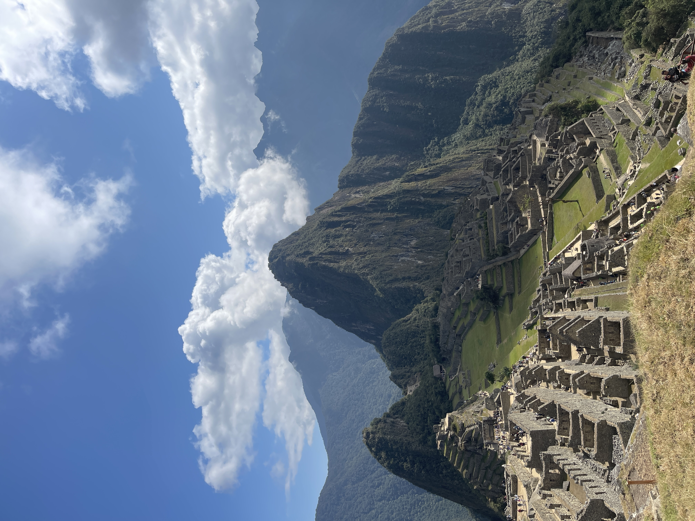

Ethan Mathews
home
about me
pets
hobbies
true passion
projects
past adventures
On this page
Past Travel Destinations
Travel Blogs
Past Travel Destinations
Travel Blogs
Portugal -> Spain
A journey through history and architectural brilliance, highlighting the lasting influence of Spanish design and cultural heritage. 07/27/2024 - 08/05/2024

Lima -> Cusco
An exhilarating adventure across Peru filled with action-packed days on minimal amounts of sleep. 06/01/2023 - 06/11/2023
No matching items